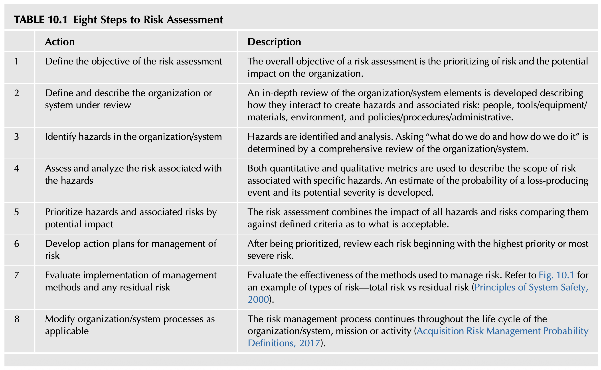
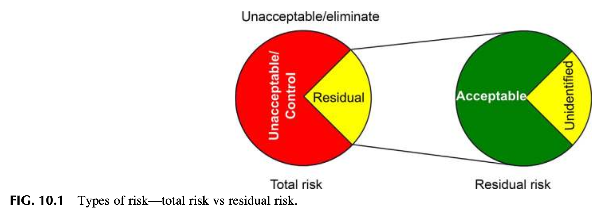
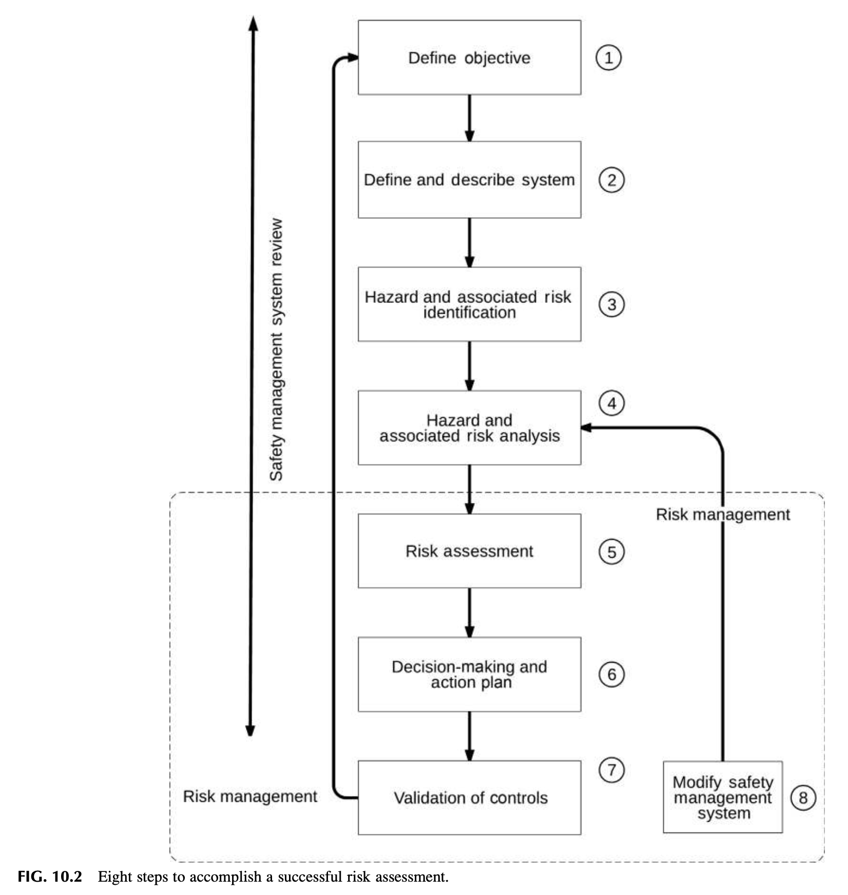
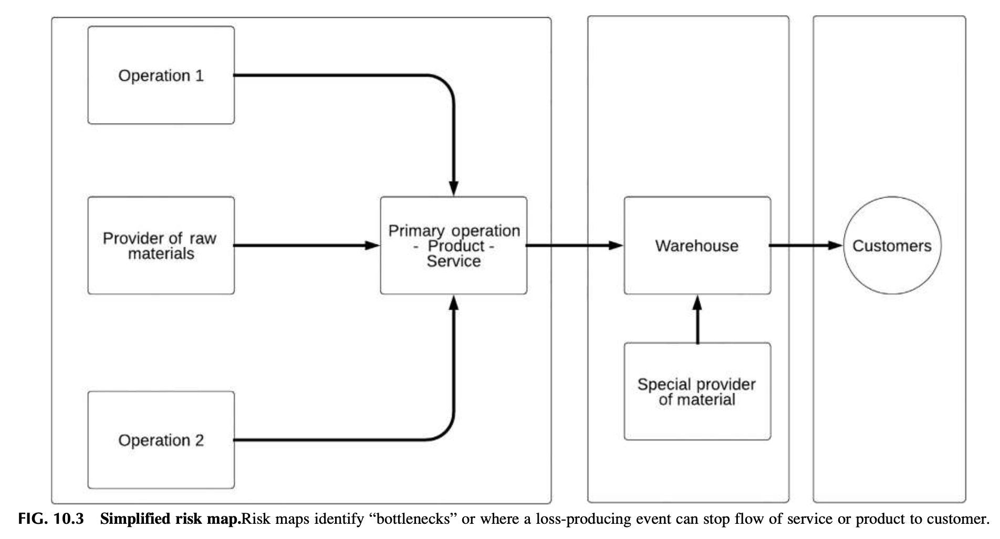
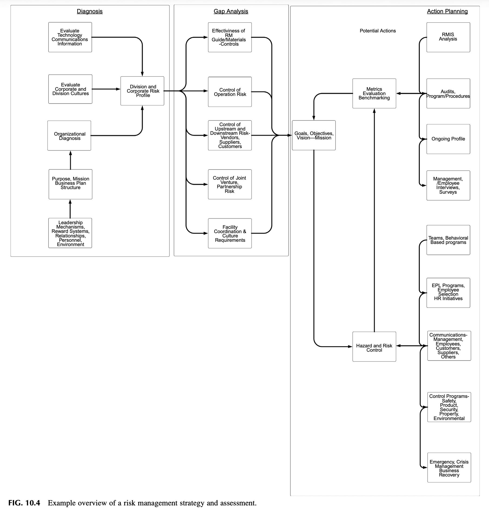

Chapter 10: Understanding Basic Risk Management Principles
기본 위험관리 원칙의 이해: 사후 손실 지표에서 예측적 위험관리로의 패러다임 전환
DOI: https://doi.org/10.1016/B978-0-12-814663-7.00010-8
1. INTRODUCTION (도입: 사후 손실 지표에서 예측적 위험관리로)
위험관리(Risk Management)는 고도화되고 지속 가능한 안전문화(Strong Safety Culture)를 구축하는 데 있어 결코 생략할 수 없는 핵심 초석입니다. 미국 산업위생협회 및 안전공학회의 표준인 ANSI Z10-2012 (안전보건경영시스템 표준) 등 유수의 안전 프레임워크는 조직 전반을 분석할 때 반드시 체계적인 위험성평가(Risk Assessment)를 선행하도록 규정하고 있습니다.
위험관리 개념은 최고경영진과 현장 관리자로 구성된 '리더십 팀의 일상적 운영 의사결정 프로세스'의 핵심 축으로 다루어져야 합니다. 또한 조직의 안전문화를 장기적으로 유지하고 발전시키기 위해서는 경영진뿐만 아니라 현장의 모든 임직원이 '위험(Risk)', '위험 통제(Risk Control)', '위험관리(Risk Management)'라는 핵심 개념을 일관되고 정확하게 이해해야 합니다.
1.1 백미러의 함정: 사후 손실 데이터(Post-loss Data)의 맹점
오늘날 대다수 기업은 조직이 얼마나 안전하게 통제되고 있는지를 가늠하는 일차적 척도로 과거의 사고 및 손실 데이터(Post-loss data)를 여전히 사용하고 있습니다. 워런 버핏의 명언처럼, 비즈니스 세계에서는 '백미러(후방 거울)'로 지난 과거를 돌아보는 것이 '앞유리(윈드실드)'를 통해 앞으로 닥칠 미래를 내다보는 것보다 훨씬 선명하고 명확해 보입니다. 그러나 과거 사고 통계만 바라보는 관리는 앞을 보지 않고 백미러만 보며 운전하는 위험천만한 후방 지향적 방식과 같습니다.
(Post-loss Data)"] --> R2["보험 청구 데이터 분석
(Claims-driven Ranking)"] R2 --> R3["사후 약방문식 위기 대응
(Regulatory Crisis Approach)"] end subgraph Proactive["선제적 미래 지향적 접근 (앞유리 방식)"] P1["정성적·정량적 리스크 예측
(Forecasting & Modeling)"] --> P2["내재적 위험 선제 평가
(Inherent Risk Assessment)"] P2 --> P3["체계적 위험통제 및 내재화
(Proactive Safety Culture)"] end
1.2 안전 전문가가 처한 모순과 정성·정량 예측 분석(Forecasting)의 부재
- 규제 대응 위기관리의 역설: 안전 전문가들은 위험관리 방법론을 통해 잠재 위험을 사전 차단하기보다는, 정부의 법적 규제 단속과 위기 상황에 즉흥적으로 대응하느라 전통적인 사후 손실 접근법을 답습하도록 강요받아 왔습니다.
- 예측 분석의 실종: 위험관리의 가장 중요한 도구는 리스크의 불확실성과 발생 확률을 사전에 최소화하는 정성적·정량적 예측 기법(Qualitative and Quantitative Forecasting)입니다. 그러나 안타깝게도 현실의 안전 전문가들은 이 엄밀한 분석 기법을 거의 활용하지 못하고 있으며, 모호하고 오해를 불러일으키는 단순 '안전 메트릭(Safety metrics)'이라는 용어 뒤에 숨어 있습니다.
- 보험 청구 순위 매기기의 고착화: 보험금 청구 데이터에만 매달려 사고 발생 빈도(Frequency), 심각도(Severity), 백분율을 집계하고 이를 내림차순으로 정렬하여 단순 순위를 매기는 구태의연한 방식이 여전히 안전 성과 측정의 주류로 고착되어 있습니다.
- 위험(Risk)의 학술적·실무적 개념 정의
- 조직 내 각 부서별로 위험의 정의가 상이하게 사용되는 원인과 맥락 설명
- 조직 내 위험관리를 가로막는 주요 장애물(Obstacles) 분석
- 위험성평가의 8단계 프로세스 설명
- 수용 가능한 위험(Acceptable Risk, ALARP)의 개념과 그 파급 효과 규명
- 위험 측정 및 진단의 다양한 방법론 설명
- 위험 스펙트럼(Risk Spectrum)의 5단계 계층 구조 및 전사적 영향 설명
2. WHAT IS RISK? (위험이란 무엇인가?)
안전경영시스템(SMS)을 성공적으로 구축하고 안전문화를 질적으로 개선하는 근본 목적은 조직이 자신도 모르는 사이에 치명적인 고심각도 위험(Unwise high severity risk)을 감수하는 파국적 상황을 원천적으로 방지하는 데 있습니다.
(Effect of Uncertainty on Objectives)"] I2["긍정적·부정적 편차 포괄
사건, 상황 변화, 결과로 설명"] end subgraph ANSI["ANSI Z10-2012"] A1["위험 사건/노출의 발생가능성과
부상·질병 심각도의 조합 추정치"] A2["리스크 매트릭스 활용
최악의 시나리오 기반 추정"] end subgraph Academic["Ropeik & Gray (2002)"] R1["재해(Hazard) 노출이
부정적 결과로 이어질 확률"] end ISO --- ANSI --- Academic
2.1 글로벌 표준 및 학술 문헌상의 리스크 정의
- ISO 31000: 리스크를 "불확실성이 목표에 미치는 영향(Effect of uncertainty on objectives)"으로 정의합니다. 영향이란 기대했던 것과의 편차(긍정적/부정적)를 뜻합니다.
- ANSI Z10-2012: 리스크를 "재해(Hazard) 사건 또는 노출(들)의 발생가능성(Likelihood)과, 그 사건 또는 노출에 의해 야기될 수 있는 부상이나 질병의 심각도(Severity)의 조합에 대한 추정치"로 정의합니다. 표준화된 리스크 매트릭스를 사용하여 최악의 시나리오(Worst-case scenario)를 추정합니다.
- 로픽과 그레이 (Ropeik & Gray, 2002): "리스크(위험)란 재해(Hazard)에 대한 노출이 부정적인 결과(Negative consequence)로 이어질 확률이다."
2.2 재해(Hazard)와 위험(Risk)의 연계 및 4대 처리 전략
현장의 모든 재해(사망·부상·손상을 유발하는 근원 그 자체)는 그에 상응하는 고유한 위험(발생 가능성과 심각도의 조합 추정치)을 품고 있습니다.
| 구분 | 전략 명칭 | 실행 방식 및 현장 적용 |
|---|---|---|
| 1. 회피 | Avoidance (Terminate) | 위험성이 너무 높은 공정, 기계 설비, 화학물질의 사용을 설계 단계에서 원천 제거하거나 전면 중단함. |
| 2. 통제 | Control (Treat) | 공학적 방벽 설치, 안전 표준작업절차(SOP) 제정, 개인보호구 지급 등을 통해 발생 확률과 피해 심각도를 경감시킴. |
| 3. 전가 | Transfer (Tolerate through 3rd-party) | 보험 가입, 아웃소싱 위험 조항 명문화 등을 통해 사고 시 발생하는 재정적 손실 책임을 제3자에게 이전함. |
| 4. 수용 | Acceptance (Tolerate) | 잠재 손실의 전반적 규모와 파급력을 면밀히 평가한 후, 통제 대책 후 남은 안전한 잔여 위험을 경영진이 공식 수용함. |
3. THE MYTH OF “NO LOSS NO RISK” (“손실이 없으면 위험도 없다”는 신화)
위험 개념은 16세기 통계학과 확률(Probability) 이론의 진보와 발을 맞추어 체계화되었습니다. 근대적 위험 개념이 정립되기 이전 인류는 사고나 부상을 인간이 통제할 수 없는 '정해진 운명(Preordained fate)'의 결과로 여겼습니다. 이러한 운명론적 사고와 행운(Luck)에 대한 믿음은 오늘날에도 여전히 남아 있습니다 (예: 특정 유니폼이나 징크스, 행운의 부적을 찾는 행위).
안전 전문가는 객관적 증거(Supporting evidence)가 뒷받침되지 않는 사견이나 주관적 느낌을 제시해서는 안 됩니다. 상대방을 설득력 있게 변화시키려면 개인의 신념, 과거 경험, 주관적 느낌의 차원을 넘어서야 합니다.
사실에 기반한 진술(Fact-based statements)은 반드시 학술적 출처(Scholarly sources)에 의해 입증되어야 합니다. 경영 리더십 팀과 규제 준수나 안전 현안을 논의할 때 구체적인 공인 표준(Specific standard) 조항을 직접 인용하는 것이 가장 강력한 무기입니다.
3.1 잠재적 오류(Latent Errors)와 지연된 시간축의 궤적
손실 유발 사건의 근본 원인은 일상적 작업 속에 교묘히 숨겨져 있습니다. 시스템의 초기 설계, 원자재 선정, 장비 스펙, 작업자 선발, 교육 훈련 프로세스 등에서 '잠재적 오류(Latent errors)'가 미처 인지되지 못한 채 구조적으로 내장될 수 있습니다.
통제되지 않은 재해(Hazard)에 노출되는 빈도와 실제 대형 사고가 폭발하는 사이에는 상당한 시간적 지연(Time line stretch)이 발생합니다. 인간의 실수, 부적절한 기계 설계, 내장된 잠재적 재해가 한 줄로 정렬되는 '스위스 치즈 모델의 궤적'이 완성되기까지는 오랜 시간이 걸리기 때문입니다.
잠재 오류(Latent Errors) 매몰"] --> L2["반복 작업 수행 시
운 좋게 무사고 지속"] L2 --> L3["착각의 형성:
'손실 없음 = 위험 없음(No Loss No Risk)'"] L3 --> L4["경계심 약화 및
불안전 행동의 만성화"] L4 --> L5["인적 오류 + 잠재 오류 + 취약 환경의
불운한 궤적 정렬 (Time Line 교차)"] L5 --> L6["💥 파국적 대형 참사 발생
(NASA, BP 정유공장, 딥워터, 타이타닉)"]
3.2 역사적 대형 참사 4대 사례와 공통 분모
- NASA 우주왕복선 폭발 참사 (챌린저호 및 컬럼비아호)
- BP 멕시코만 딥워터 호라이즌 시추선 폭발 및 원유 유출 (2011)
- BP 텍사스 정유공장 폭발 참사 (2005)
- RMS 타이타닉호 침몰 참사 (1912)
이러한 참사들의 절대적 공통점은 현장의 위험 경고를 진지하게 다루지 않았고, 잠재적 위험에 대한 완전한 평가를 게을리했으며, 초기 손실 징후를 묵살했고, 안전 표준을 준수하지 않았거나, 작업 환경이 급변했음에도 낡고 부적절한 법적 규제만을 맹목적으로 따랐다는 사실입니다.
4. DEFINITIONS OF RISK—THE POTENTIAL FOR CONFLICT (위험 정의의 다원성과 부서 간 충돌)
고객사를 위한 정밀 위험성평가 프로세스 개발 팀에 참여했던 네이선(Nathan)은 평생 동안 사후 '손실 통제(Loss control)'에만 매몰되어 일해 왔습니다. 그러나 리스크의 진정한 본질을 깊이 공부하면서 전문적 인생의 전환점을 맞이했습니다.
리스크 기반 관점을 온전히 받아들이자, 과거 자신이 "발생 빈도는 높으나 피해는 미미한 경미한 사건(High frequency with low risk)"을 줄이는 데만 지나치게 많은 시간과 자원을 낭비하고 있었으며, 정작 작업장 배후에 숨겨져 있던 "발생 빈도는 극히 낮지만 발생 시 조직을 파멸시키는 잠재적 고심각도 조건(High severity potential conditions)"을 완전히 놓치고 있었다는 충격적인 진실을 깨달았습니다.
4.1 조직 내 부서별 위험 정의의 파편화와 마찰
신규 채용, 공장 증설, 신시장 개척 필수"] end subgraph SafetyView["안전 전문가 / 위험관리자 관점"] SV1["위험(Risk) = 손실과 재앙의 잠재력"] SV2["전략적·운영적·위험 리스크의 복합체
통제되지 않으면 인명·자산 파멸"] end BusinessView <-->|정의와 지향점의 불일치로 마찰 발생| SafetyView
- 비즈니스 리더십의 시각: 일반 비즈니스 환경에서 '위험'은 기업을 성장시키는 필수적인 전략적 결단입니다. 신제품 개발, 공장 신축, 신규 인력 채용, 미개척 시장 진출은 모두 리스크를 무릅쓰는 행위이며, 경영 관점에서는 위험을 감수(Risk-taking)하지 않고는 어떤 성과도 달성할 수 없습니다.
- 안전 전문가의 시각: 안전 및 리스크 관리자가 사용하는 위험은 전략적 리스크, 운영 리스크, 재해(Hazard) 리스크가 상호 중첩되어 다양한 손실 유발 상황을 창출하는 잠재적 파괴력을 의미합니다.
- 충돌과 마찰: 경영진은 위험 감수를 위대한 비즈니스적 미덕으로 바라보는 반면, 안전 부서의 위험 저감 제안은 기업의 성공과 확장을 가로막는 번거로운 걸림돌이나 방해물로 인식하여 심각한 갈등이 야기됩니다.
5. OBSTACLES TO RISK MANAGEMENT (위험관리 실행의 5대 장애물)
5.1 사고(Accident) 용어의 문제와 인시던트(Incident) 채택
사전에서 사고(Accident)는 "피해자의 과실이나 잘못 없이 발생하는, 부상이나 손실을 야기하는 예기치 못한 우발적 사건"으로 정의됩니다. 이 용어는 현장의 위험 노출에 대해 아무것도 설명하지 못하며, 사고는 막을 수 없다는 운명론적 체념을 강화합니다.
이에 따라 ANSI Z10 표준은 '사고(Accident)'라는 단어를 완전히 폐기하고 '인시던트(Incident, 사건/이상상황)'라는 용어를 공식 채택했습니다. 인시던트는 업무 관련 부상, 질병, 사망이 발생했거나 발생할 뻔했던 모든 사건(아차사고/Near-miss 포함)을 총칭하여, 사전에 통제 가능한 시스템적 결함임을 분명히 합니다.
식품 가공공장에 안전 진단을 나간 네이선은 직원이 악취 나는 폐기물(Offal, 찌꺼기/부산물) 배수관 앞에 쪼그려 앉아 삽으로 오물을 끝없이 퍼내고 있는 광경을 목격했습니다. 원래 그 시스템은 고가의 '자동 세척 시스템'이어야 했습니다.
작업자는 이렇게 털어놓았습니다: "이 배수관 이송 시스템은 본사 최고위 임원 중 한 분이 직접 특별 설계한 것입니다. 하지만 전혀 작동하지 않습니다. 매일 밤 유지보수 인력이 달라붙어 막힌 배관을 뚫어야만 다음 날 공장을 돌릴 수 있습니다. 하지만 그 누구도 고위 경영진에게 당신이 거액을 들여 만든 자동화 시스템이 완전히 실패작이며 매일 막힌다는 진실을 감히 말하지 못합니다."
시사점: 단순한 인간공학적 부담을 조사하러 갔다가 사내 권력 구조와 임원의 에고(Ego), 침묵의 카르텔이 얽힌 복합적 시스템 결함을 발견한 사례입니다. 위험관리 개선안을 제안할 때는 조직의 인간적 역학 관계와 사내 정치(Organizational politics)를 정밀하게 고려해야 합니다.
5.2 재해(Hazard)와 위험(Risk) 용어의 엄밀한 구분 (혼용 방지)
- 재해 (Hazard): "사망, 부상, 질병, 또는 물리적 손상을 야기하는 본질적 사건이나 물리적 근원 그 자체(Potential source of harm / damage)." (예: 고전압 배선, 유독성 암모니아 가스, 바닥의 기름 유출 등 인명이나 설비에 직접적 타격을 가하는 실체).
- 위험 / 리스크 (Risk): "식별된 재해(Hazard)에 노출되었을 때 그 악영향이 실제로 발생할 가능성(Probability/Likelihood)과 초래될 결과 심각도(Severity)의 통계적·논리적 조합." (즉, 재해가 현실화될 확률적 가능성의 크기).
6. RISK ASSESSMENT (위험성평가: 3단계 기반 프레임워크와 8단계 프로세스)
6.1 위험관리의 3단계 기본 프레임워크 (HSG65)
(Risk Identification)"] --> P2["[Phase 2] 위험성평가
(Risk Assessment)"] P2 --> P3["[Phase 3] 위험 통제
(Risk Control)"] subgraph P1_Desc["운영 전수 매핑"] D1["JHA, 공정 검토,
과거 데이터 전수 분석"] end subgraph P2_Desc["위험의 크기 측정"] D2["리스크 매트릭스 활용,
잠재 심각도·우선순위 수립"] end subgraph P3_Desc["현장 대책 실행"] D3["우선순위 기반 조치,
잔여 위험 관리"] end P1 -.-> P1_Desc P2 -.-> P2_Desc P3 -.-> P3_Desc
6.2 Table 10.1 Eight Steps to Risk Assessment (위험성평가 8단계)

| 단계 | 핵심 실행 과업 (Action) | 세부 설명 및 적용 기준 (Description) |
|---|---|---|
| Step 1 | 위험성평가의 목표 정의 (Define the objective) |
위험성평가의 궁극적 목표는 조직에 미치는 잠재적 영향을 기준으로 위험의 객관적 우선순위를 수립(Prioritizing of risk)하는 데 있다. |
| Step 2 | 평가 대상 조직/시스템의 기술 (Define and describe system) |
조직/시스템 구성 요소들의 상호작용 분석: 4대 핵심 축인 인적 요소(People), 도구/장비/자재(Tools/Equipment/Materials), 작업 환경(Environment), 정책/절차/관리 체계(Policies/Procedures/Administrative)가 어떻게 상호작용하여 재해(Hazards)와 위험(Risks)을 유발하는지 포괄적으로 규명한다. |
| Step 3 | 재해(Hazard) 식별 (Identify hazards) |
조직과 시스템에 대한 전면적 검토를 통해 "우리가 무엇을 하며, 그것을 어떤 방식으로 수행하는가(What do we do and how do we do it?)"를 집요하게 질문하고 잠재적 재해(Hazards)를 식별·분석한다. |
| Step 4 | 재해 연계 위험(Risk) 평가·분석 (Assess and analyze the risk) |
특정 재해와 연계된 위험의 범위를 기술하기 위해 정량적·정성적 메트릭(Quantitative and Qualitative metrics)을 모두 동원한다. 재해로 인한 손실 유발 사건의 발생 확률과 잠재적 피해 심각도 추정치를 도출한다. |
| Step 5 | 잠재 영향에 따른 재해 및 위험의 우선순위화 (Prioritize hazards & risks) |
모든 재해와 관련 위험의 복합적 파급 영향을 결합하고, 사전에 수립된 '수용 가능한 위험 기준(Criteria as to what is acceptable)'과 대조하여 통제의 시급성을 서열화한다. |
| Step 6 | 위험관리를 위한 실행 계획 수립 (Develop action plans) |
우선순위가 확정되면, 가장 치명적이고 순위가 높은 최상위 핵심 위험(Highest priority or most severe risk)부터 착수하여 구체적 관리 실행 계획을 수립한다. |
| Step 7 | 관리 방법 실행 평가 및 잔여 위험 추적 (Evaluate implementation & residual risk) |
현장에 적용된 위험관리 대책들의 실질적 유효성을 정밀 평가한다. 대책 적용 후에도 불가피하게 남게 되는 잔여 위험(Residual risk)의 크기를 추적·통제한다 (Fig. 10.1 연계). |
| Step 8 | 조직/시스템 프로세스의 지속적 수정 (Modify processes as applicable) |
위험관리 프로세스는 일회성 행사가 아니며, 조직, 시스템, 미션 또는 개별 활동의 전체 생애주기(Life cycle) 전반에 걸쳐 영구히 지속되고 갱신되어야 한다. |
6.3 Fig 10.1 총 위험 vs 잔여 위험 (Total Risk vs. Residual Risk) 해설

(Identified Risk)"] TR2["미식별 위험
(Unidentified Risk)"] end subgraph ControlProcess["위험 통제 조치"] direction TB CP1["설계 변경 / 공학적 방벽"] CP2["관리적 절차 / 개인보호구"] end subgraph ResidualRisk["잔여 위험 (Residual Risk)"] direction TB RR1["수용 가능한 위험
(Acceptable Risk)"] RR2["수용 불가능한 위험
(Unacceptable Risk - 추가 조치 필수)"] RR3["미인지 잔여 위험
(Unidentified Residual Risk)"] end TotalRisk --> ControlProcess ControlProcess --> ResidualRisk
- 총 위험 (Total Risk): 시스템 내에 존재하는 모든 잠재적 위험의 총체이며, '식별된 위험'과 '미식별 위험'의 합입니다.
- 잔여 위험 (Residual Risk): 위험 감소 대책을 실행하고 난 후 필연적으로 남게 되는 위험입니다.
- 수용 가능한 위험: 조직의 기준선 이하로 통제되어 경영진이 공식 수용할 수 있는 위험.
- 수용 불가능한 위험: 대책 후에도 허용 기준을 초과하여 추가적인 공학적 방벽이 강제되는 위험.
- 미식별 잔여 위험: 평가 과정에서 발견되지 못해 시스템 배후에 잠복해 있는 가장 위험한 시한폭탄.
6.4 Fig 10.2 위험성평가 8단계 순환 체계 해설

(Define Objective)"] --> S2["Step 2: 시스템/조직 기술
(4대 축: 사람·도구·환경·관리)"] S2 --> S3["Step 3: 재해(Hazard) 식별
('우리가 무엇을 어떻게 하는가?')"] S3 --> S4["Step 4: 리스크 평가 및 분석
(정량·정성 매트릭스)"] S4 --> S5["Step 5: 우선순위화
(수용 기준 대조)"] S5 --> S6["Step 6: 실행 계획 수립
(최상위 위험 집중)"] S6 --> S7["Step 7: 실행 평가 & 잔여위험 추적
(대책 유효성 검증)"] S7 --> S8["Step 8: 프로세스 수정 & 피드백
(생애주기 전반 지속)"] S8 -.->|지속적 개선 폐루프| S1
본 다이어그램은 위험성평가가 일회성 서류 작업이 아니라, 1단계부터 8단계까지 끊임없이 피드백되며 순환하는 생애주기 폐루프(Closed-loop Lifecycle Management)임을 보여줍니다.
7. ACCEPTABLE RISK (수용 가능한 위험과 ALARP 원칙)
위험은 눈에 보이지 않더라도 조직의 모든 기능, 과업, 행동 속에 상존합니다. 계단을 내려가거나, 물건을 들어 올리거나, 자동차에 주유를 하는 지극히 일상적인 동작에도 위험은 언제나 도사리고 있습니다. 익스트림 스포츠처럼 자발적으로 위험을 감수하던 작업자가 자신의 사생활에서 즐기던 무모한 위험 감수 성향을 작업장 안으로 끌고 들어오는 것은 치명적인 안전문화의 위협입니다.
7.1 ALARP 원칙과 3대 위험 판정 영역
국제적으로 통용되는 위험관리 의사결정의 대원칙은 ALARP (As Low As Reasonably Practicable, 합리적으로 실행 가능한 한 낮게)입니다.
어떤 상황에서도 위험 감수 불가 / 즉시 작업 전면 중단"] Z2["⚖️ ALARP 허용 영역 (Tolerable / ALARP Region)
위험 저감 비용이 효익에 비해 현저히 불균형하지 않는 한
반드시 추가 통제 대책 강구 필수"] Z3["✅ 광범위 수용 영역 (Broadly Acceptable Region)
위험이 극히 미미하여 일상적 표준 절차로 충분히 통제됨"] Z1 --- Z2 --- Z3 end
8. MANAGEMENT OF RISK (위험관리 체계: 부서 간 장벽 극복과 8대 진단 질문)
경찰, 소방, 군사 작전, 광업, 심해 잠수, 항공기 조종 등은 본질적으로 극도의 고위험 환경(High-risk environment)에서 작동합니다. 그럼에도 불구하고 이들이 임무를 완수할 수 있는 이유는, 위험을 철저히 낮추도록 특별히 고안된 엄격한 절차, 다중 방호 프로토콜, 고도화된 통제 장치를 체계적으로 보유하고 있기 때문입니다.
8.1 재무 중심 위험관리 부서와 현장 안전 부서의 갈등
- 위험관리 부서(Risk Management): 주로 재무/기획 본부 산하에 속하며, 주된 업무는 보험 증권 발행, 위험 재무화, 손실 보상 및 클레임 관리에 치중합니다.
- 안전 부서(Safety Department): 주로 생산운영 또는 인사 본부 산하에 배치되며, 현장 위험 통제와 규제 준수에 집중합니다.
- 결과: 두 부서는 위험을 정의하는 방식과 철학의 차이로 인해 서로 협력하지 못하고 적대적 관계(Adversaries)로 반목하기 쉽습니다.
8.2 사내 위험관리 체계 진단을 위한 8대 핵심 전략 질문
| 번호 | 진단 영역 | 핵심 전략 질문 내용 |
|---|---|---|
| Q1 | ERM 프레임워크 | 우리 조직이 ISO 31000 등 공인 표준에 기반한 전사적 위험관리(ERM) 체계를 공식적으로 따르고 있는가? |
| Q2 | 위험관리 위임 범위 | 현재 사내 위험관리 부서가 추진 중인 업무의 본질적 성격과 범위는 무엇이며, 어떤 과업을 수행하도록 위임받았는가? |
| Q3 | 부서 간 협력 관계 | 위험관리 실무 담당자들과 가능한 모든 채널을 통해 긴밀한 신뢰 및 협력 관계(Rapport)를 구축하고 있는가? |
| Q4 | 안전 기준의 공식 반영 | 현행 위험관리 프로세스 안에 실질적인 현장 '안전(Safety) 기준'이 공식 지표로 포함되어 있는가? |
| Q5 | 평가 메트릭 파악 | 위험관리 부서가 전사 리스크를 평가할 때 구체적으로 어떤 평가 메트릭과 기법을 사용하고 있는지 완벽히 파악하고 있는가? |
| Q6 | 가용 자원의 공유 | 위험관리 부서가 보유한 전문 자원(리스크 분석 툴, 재무 데이터 등) 중 안전경영시스템을 보완하는 데 끌어다 쓸 수 있는 자원은 무엇인가? |
| Q7 | 소통 채널의 통합 | 위험관리 기준이 사내에 전파되는 소통 경로를 이해하고 있으며, 안전경영시스템도 동일한 전사 소통망을 공유할 수 있는가? |
| Q8 | 실시간 데이터 연동 | 위험(Risk), 재해(Hazard), 손실 사건에 대해 부서의 벽을 넘어 상호 간에 데이터를 실시간 공유할 수 있는 통합 프레임워크를 구축했는가? |
9. THE “RISK SPECTRUM” (위험 스펙트럼의 5단계 계층과 복합 연쇄 폭발)
조직 존립 킬러 / 고객 이탈 / 주가 폭락 / 대형 소송 / 폐업"] L2["🏭 Level 2: 생산 운영 및 시설 위험 (Operations)
공장 파괴 / 서비스 중단 / 핵심 병목 마비 / 시장 점유율 상실"] L3["🌐 Level 3: 제3자 및 외부 환경 위험 (Third Parties)
환경오염 유출 / 제품 결함 / 대형 징벌적 손해배상 소송"] L4["👷 Level 4: 직원 안전보건 위험 (Employees)
작업자 부상·질병 / 산재 보상 / 인명 손실"] L5["⚖️ Level 5: 법적 규제 위반 위험 (Regulatory Issues)
행정 과태료 / 규제 기관 시정명령 / 인허가 취소"] end L2 -->|최악의 시나리오 폭발 시| L4 L2 -->|유해물질 누출 시| L3 L3 & L4 -->|법적 위반 적발 시| L5 L2 & L3 & L4 & L5 -->|총체적 파국| L1
9.1 위험 스펙트럼 5대 계층 심층 분석
- Level 1: 조직의 브랜드 및 평판 위험 (Brand & Image): 최상위 파멸적 위험으로 진정한 '조직의 킬러(Organizational killers)'입니다. 고객 이탈, 기업 가치 폭락, 대규모 소송과 언론 비난을 불러오며 조직의 존립 자체를 파괴합니다.
- Level 2: 생산 운영 및 시설 위험 (Operations): 특정 사업장이나 공장 설비가 파괴되어 서비스나 제품 공급이 마비되는 위험입니다. 대체 생산 라인이 없으면 파산합니다.
- Level 3: 제3자 및 외부 환경 위험 (Third Parties): 공장 담장을 넘어 유독물질 환경 누출, 대형 교통사고, 결함 제품으로 인해 외부 대중과 지역사회에 막대한 피해를 입히고 천문학적 징벌적 손해배상 소송을 유발합니다.
- Level 4: 직원 안전보건 위험 (Employees): 현장 근로자의 부상 및 직업병입니다. 통상적 부상은 산재보상으로 수습되나, 사망 사고나 높은 부상 빈도는 '죽음의 일터'라는 악명을 낳아 브랜드(Level 1)를 직격합니다.
- Level 5: 법적 규제 위반 위험 (Regulatory Issues): 행정 과태료와 시정명령입니다. 반복적인 태만과 중대 위반은 사업장 폐쇄와 사법 처리로 이어집니다.
9.2 Fig 10.3 간이 리스크 맵 (Simplified Risk Map) 해설

(Critical Bottleneck)"] OP2 --> OP3["조립 공정"] end subgraph Downstream["하류 유통망 (Downstream)"] D1["물류 허브"] --> D2["최종 고객 (Customer)"] end U1 & U2 --> OP1 OP3 --> D1
리스크 맵은 원자재 유입부터 고객 인도까지의 밸류체인 전 과정을 추적하여, 단 한 번의 손실 유발 사건으로 전체 공정을 멈춰 세울 수 있는 '단일 실패점(Single Point of Failure)'인 치명적 병목 구간(Bottleneck)을 사전에 식별하고 업무연속성계획(BCP)을 수립하는 핵심 도구입니다.
화학공장 폭발 화재 (Level 2 시설 파괴) ➔ 운전원 사상 (Level 4 직원 피해) ➔ 유독가스 인근 마을 유출 (Level 3 제3자 환경 재앙) ➔ 고용부·환경청 조업정지 및 압수수색 (Level 5 규제 사법 처분) ➔ 불매운동과 주가 폭락, 파산 위기 (Level 1 브랜드 파멸)
9.3 Fig 10.4 전사적 위험관리 전략 및 평가 총괄 마스터플랜 해설

(Purpose, Mission, Business Plan)"] F2["기업 및 사업부 안전문화 진단
(Corporate & Division Cultures)"] F3["경영진·직원 심층 인터뷰 및 서베이
(Interviews & Surveys)"] end subgraph CoreStrategy["2. 4대 전략적 리스크 통제 (Strategy)"] C1["운영 리스크 통제
(Control of Operation Risk)"] C2["상류·하류 리스크 통제
(Vendors, Suppliers, Customers)"] C3["합작투자·파트너십 리스크 통제
(Joint Venture & Partnerships)"] C4["재해 및 위험 통합 통제
(Hazard & Risk Control)"] end subgraph Implementation["3. 인적 시스템 및 프로그램 실행 (Execution)"] E1["팀 활동 및 행동기반 안전(BBS)
(Teams & Behavioral-based Programs)"] E2["HR 채용·선발 및 리더십 보상 체계
(HR Initiatives, Reward Systems)"] E3["전방위 소통 메커니즘
(Mgmt, Employees, Customers, Suppliers)"] E4["통합 통제 프로그램
(안전, 제품책임, 보안, 방재, 환경)"] end subgraph Evaluation["4. 평가 및 피드백 (Evaluation & Technology)"] V1["정량적 메트릭 진단 & 갭 분석
(Metrics Evaluation & Gap Analysis)"] V2["위험관리 정보시스템(RMIS) 분석
(RMIS Analysis & Technology)"] V3["벤치마킹, 감사, BCP 비상위험대응
(Benchmarking, Audits, Business Recovery)"] end Foundation --> CoreStrategy CoreStrategy --> Implementation Implementation --> Evaluation Evaluation -.->|지속적 피드백 루프| Foundation
9.4 제11장 활동 기반 안전시스템(ABSS)과의 가교
위험관리를 성공시키기 위해 리더십은 안전 비전과 위험 저감 목표를 현장에 끊임없이 전파해야 합니다. 그러나 이는 자칫 일방적인 하향식(Top-down) 지시로 전락하기 쉽습니다. 차기 장인 제11장에서 다룰 활동 기반 안전시스템(Activity-Based Safety System, ABSS)은 리더십과 현장 직원이 실재하는 위험과 지각된 위험에 대해 격의 없이 토론할 수 있는 공식적인 '양방향 소통 플랫폼(Two-way communication framework)'을 제공하여 위험 중심의 안전 활동을 현장에 완벽히 안착시킵니다.
10. SUMMARY (제10장 총괄 요약)
| 핵심 주제 | 총괄 요약 내용 |
|---|---|
| 1. 패러다임 전환 | 심층적 안전문화의 핵심은 과거의 사후 손실 지표(Loss-based) 중심에서 벗어나, 미래 지향적인 위험관리(Risk-based) 중심으로 지각을 근본적으로 바꾸는 데 있다. |
| 2. 3단계 사이클 | 재해 식별 ➔ 위험성평가 ➔ 위험 통제의 3단계를 축으로 재해에 내재된 위험을 회피, 통제, 전가, 수용한다. |
| 3. 정의 격차 해소 | 비즈니스 부서(위험 감수=미덕)와 안전 부서(위험=손실 방지) 간의 위험 정의 차이를 명확히 이해하고 공통의 전략적 언어로 소통해야 한다. |
| 4. 신화의 타파 | 손실이 발생하지 않았다고 해서 위험이 없는 것이 아니다. 잠재적 오류가 은폐되어 있다가 시간 축이 교차하는 순간 대형 참사가 폭발한다. |
| 5. 8단계 평가 체계 | 목표 정의부터 시스템 기술(4대 축), 우선순위화, 잔여 위험 추적, 프로세스 수정에 이르는 8단계 생애주기 평가 모델을 실행해야 한다. |
| 6. 위험 스펙트럼 | 근로자 부상(Level 4)뿐만 아니라 설비 마비(Level 2), 제3자 피해(Level 3), 규제 제재(Level 5)를 방어하여 조직 존립의 기반인 브랜드 가치(Level 1)를 사수해야 한다. |
| 7. 차기 장 연계 | 제11장에서는 본 장의 위험관리 원칙을 양방향 소통 구조로 구현하는 활동 기반 안전시스템(ABSS)을 본격적으로 다룬다. |
11. CHAPTER REVIEW QUESTIONS (복습 질문 및 심화 해설)
답변: 리스크(위험)란 단순히 다칠 수 있는 가능성이 아니라, "특정한 재해(Hazard) 사건 또는 노출이 실제로 발생할 확률(Likelihood/Probability)과, 그로 인해 발생할 수 있는 부상, 질병, 재산 피해, 환경 파괴 등 부정적 결과의 심각도(Severity)를 통계적·논리적으로 결합한 추정치"입니다 (ANSI Z10, 2012; ISO 31000).
답변: 경영 및 마케팅 부서는 신제품 출시나 시장 개척을 위한 위험 감수(Risk-taking)를 기업 성장의 필수적 미덕으로 정의하는 반면, 안전 및 위험관리 부서는 인명 피해나 법적 책임을 유발하는 회피·통제의 대상(Hazardous potential)으로 정의합니다. 이로 인해 경영진은 안전 통제를 사업의 걸림돌로 오인하고, 안전 부서는 경영진을 안전 불감증으로 비판하며 심각한 소통 단절이 발생합니다.
답변:
1) 사고를 불가항력적 운명으로 치부하는 '사고(Accident)'라는 단어의 독성,
2) 최근 무사고였으니 안전할 것이라 착각하는 'No loss no risk'의 편향,
3) 재해(Hazard, 손상 그 자체)와 위험(Risk, 발생 가능성과 심각도의 결합) 용어의 무분별한 혼용,
4) 고위 임원의 결함 설계를 보고하지 못하는 사내 정치와 침묵 카르텔 (Lesson Learned 3의 오프알 삽질 사례),
5) 재무 중심 위험관리 부서와 생산 중심 안전 부서 간의 조직적 사일로와 적대감입니다.
답변: Step 1: 목표 정의 ➔ Step 2: 시스템 기술 (4대 축: 사람·도구·환경·관리) ➔ Step 3: 재해(Hazard) 식별 ➔ Step 4: 리스크 평가 및 분석 (정량·정성 매트릭스) ➔ Step 5: 우선순위화 ➔ Step 6: 실행 계획 수립 ➔ Step 7: 실행 평가 및 잔여 위험 추적 ➔ Step 8: 프로세스 수정 및 전 생애주기 피드백 루프 지속.
답변: 위험을 0으로 만드는 것은 불가능하므로, 통제 대책을 통해 위험 사건의 발생 확률과 피해 심각도를 "합리적으로 실행 가능한 한 낮추고(ALARP)", 사회적·조직적 관점에서 감내할 수 있는 수준(Tolerable)으로 낮춘 상태를 의미합니다. 명확한 수용 기준이 없으면 미숙련 작업자가 자의적으로 위험을 수용하다 대형 참사를 초래하므로, 반드시 권한 있는 조직 직급에서만 공식 결정해야 합니다.